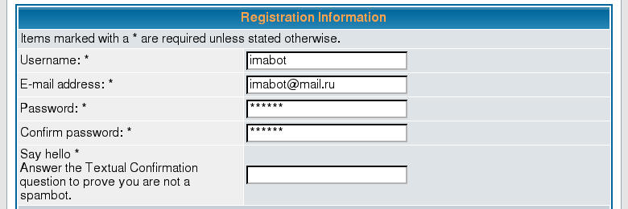

Textual Confirmation
Spam registrations is a popular method of spamming. Spam users don't post to the forum, therefore admin doesn't notice them. But Google and other search engines notice the links in the profiles and benefit the sites of the spammers.
A good method to separate bots and humans is to ask a question. Bots doesn't have intelligence, therefore can't answer and can't register. There are few MODs to perform this check:
I'm the author of Textual Confirmation, therefore I recommend Textual Confirmation.

The registration page with the Textual Confirmation question
After installing Textual Confirmation,
- you can switch off Visual Confirmation as you don't need it anymore.
- Also, change the set of the questions. A good question is something like “What's the forum pass code (see <a href="faq.php">FAQ</a>)?”.
Next: Links Rejector
Prev: Let me introduce X****r
Home: phpBB Antispam HOWTO